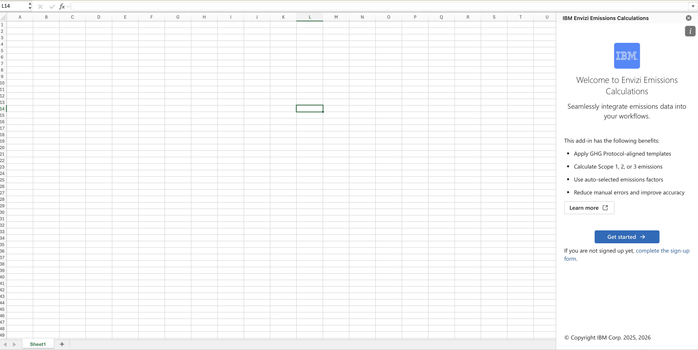
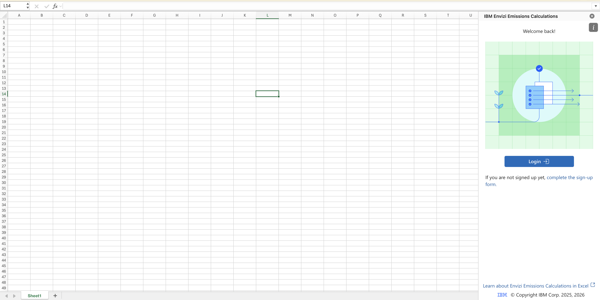
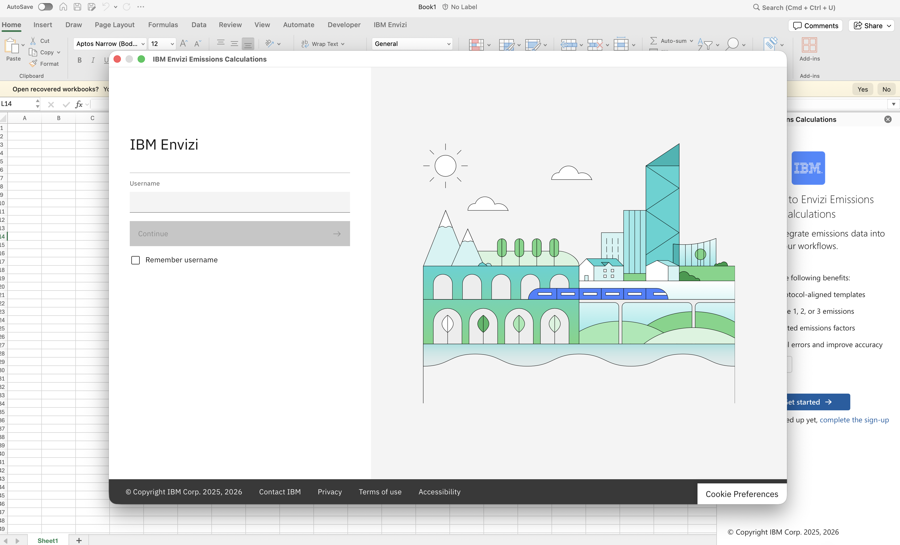
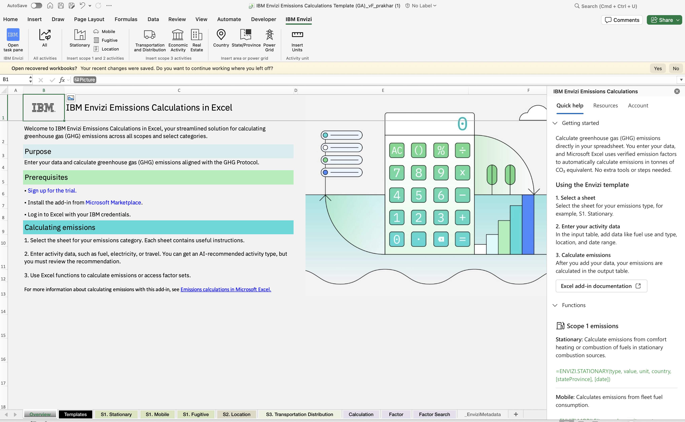
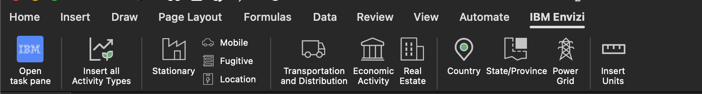

Use¶
Getting Started¶
Sign Up Process¶
Before using the add-in, you must sign up for IBM Envizi Emissions API:
Complete the sign-up form on the IBM Envizi Emissions API welcome page
After submitting the form, you’ll receive an email notification once your account has been provisioned
This process typically takes a short time, and you’ll be notified when your account is ready to use
Important
Keep your IBM ID (email address) handy as you’ll need it to sign in to the add-in.
Login Flow¶
After installation and account provisioning, the login experience differs based on whether you’re a first-time user or a returning user.
For First-Time Users
When you launch the add-in for the first time by clicking the IBM Envizi for Excel Add-in button on the Excel ribbon, you’ll see a welcome screen with a Get Started button.

For Returning Users
If you have previously logged in and are returning to the add-in, or if your session has expired, a different welcome screen will be displayed featuring a Login button.

Login Process
Regardless of the screen displayed, follow the steps below to sign in:
Click Get Started (for first-time users) or Login (for returning users).
A login pop-up window will be displayed.

Enter your IBM credentials in the pop-up window
Upon successful authentication, you will be redirected to the main interface.
Tip
Use the same IBM ID (email address) that was used during the sign-up process. The add-in leverages secure IBM authentication to establish a connection with your Envizi account.
Upon successful sign-in, the main interface of the add-in will become accessible.

Understanding the Interface¶
The add-in interface includes three primary tabs located at the top of the application:
Quick Help Tab
Provides immediate access to common tasks and frequently used features. This tab offers concise guidance to help users navigate and utilize the add-in’s functionality without leaving Excel.
Resources Tab
Contains links to relevant documentation and tutorials. Use this tab to access comprehensive guides and reference materials related to the IBM Envizi Emissions API.
Accounts Tab
Displays current account information and provides options for session management. Users can view their authentication status and sign out as required.
Custom IBM Envizi Tab - Data Validation Helpers¶
Overview¶
The IBM Envizi for Excel add-in includes a custom IBM Envizi tab in the Excel ribbon that provides quick access to data validation helpers. This tab streamlines the process of creating emissions calculation spreadsheets by automatically inserting dropdown lists with valid values for activity types, geographic areas, and measurement units.
{kind=link}

The custom tab eliminates manual data entry errors and ensures that your emissions calculations use valid, API-compatible values.
Tab Structure¶
The IBM Envizi tab is organized into four groups:
Task pane – Opens the main IBM Envizi interface
Activity Types – Inserts activity type dropdowns
Area – Inserts geographic location dropdowns
Units – Inserts measurement unit dropdowns
General Workflow¶
Select the cell(s) where you want to add a dropdown
Click the appropriate button in the IBM Envizi tab
Choose the specific validation type from the menu (if applicable)
The dropdown list is automatically applied to your selected cells
Note
You must be logged in to the IBM Envizi add-in before using these features. The add-in fetches the latest valid values from the Envizi API and caches them for performance.
Activity Types Group¶
The Activity Types button provides a dropdown menu with options to insert data validation for different emission scopes and categories.
Available Options:
Option |
Description |
|---|---|
All |
Includes all available activity types across all emission categories |
Location |
Location-based emissions (typically Scope 2 electricity) |
Stationary |
Stationary combustion sources (Scope 1) |
Mobile |
Mobile combustion sources (Scope 1) |
Fugitive |
Fugitive emissions (Scope 1) |
Transportation and Distribution |
Transportation and distribution activities (Scope 3) |
Economic Activity |
Economic activity-based emissions (Scope 3) |
Real Estate |
Real estate-related emissions (Scope 3) |
How to Use:
Select one or more cells in your spreadsheet
Click the Activity Types button in the IBM Envizi tab
Choose the appropriate category from the dropdown menu
A data validation dropdown is applied to the selected cells
Example:
If you’re creating a template for electricity consumption calculations:
Select cell A2 (or a range like A2:A100)
Click Activity Types → Location
Cell A2 now has a dropdown with location-based activity types like:
Electricity - Scope 2
Electricity - Scope 3
Electricity - Transmission and Distribution
Tip
Use the All option when you need flexibility to work with multiple emission categories in the same column. Use specific categories (Location, Stationary, etc.) when you want to restrict users to a particular emission scope.
Area Group¶
The Area button provides geographic location validation options for country, state/province, and power grid selections.
Available Options:
Option |
Description |
|---|---|
Country |
ISO alpha-3 country codes (e.g., USA, GBR, AUS) |
State/Province |
State or province identifiers for supported countries |
Power Grid |
Power grid region identifiers for electricity calculations |
How to Use:
Select the cells where you want geographic validation
Click the Area button in the IBM Envizi tab
Choose Country, State/Province, or Power Grid
The dropdown list is applied to your selected cells
Example:
For a multi-country emissions tracking spreadsheet:
Select cells in the “Country” column (e.g., B2:B100)
Click Area → Country
Users can now select from valid country codes like:
USA (United States)
GBR (United Kingdom)
CAN (Canada)
AUS (Australia)
Note
State/Province and Power Grid options are particularly useful for location-based electricity calculations where regional factors vary significantly.
Units Group¶
The Units button inserts a dropdown list of valid measurement units supported by the IBM Envizi Emissions API.
Supported Units:
The units dropdown includes all measurement units accepted by the API, such as:
Energy: kWh, MWh, GJ, therms, BTU
Volume: L (liters), gal (gallons), m³
Mass: kg, tonnes, lb
Distance: km, miles
Currency: USD, EUR, GBP (for economic activity calculations)
And many more…
How to Use:
Select the cells where you want unit validation
Click the Units button in the IBM Envizi tab
The dropdown list is automatically applied
Example:
For an energy consumption tracking sheet:
Select cells in the “Unit” column (e.g., C2:C100)
Click Units
Users can now select from valid units like:
kWh
MWh
GJ
therms
Tip
The units dropdown is context-aware and includes all units that might be valid for any activity type. When using specific activity types, refer to the API documentation to determine which units are appropriate.
Data Validation Features¶
Error Prevention:
When a dropdown is applied, Excel’s data validation prevents users from entering invalid values:
In-cell dropdown: Click the cell to see a dropdown arrow with valid options
Error alerts: If a user tries to type an invalid value, they receive an error message
Prompt messages: Helpful tooltips appear when a cell is selected
Automatic Updates:
The add-in automatically refreshes the validation data from the Envizi API:
Refresh interval: Every 3 days
Automatic sync: New activity types, countries, or units are automatically available
No manual updates needed: The add-in handles data synchronization in the background
Note
The first time you use a validation feature after logging in, there may be a brief delay while the add-in fetches the latest data from the API. Subsequent uses are instant as the data is cached locally.
Best Practices¶
Creating Calculation Templates:
Set up column headers using the
ENVIZI.HEADERS()functionApply activity type validation to the “Activity Type” column
Apply area validation to the “Country” and “State/Province” columns
Apply unit validation to the “Unit” column
Add your calculation formulas (e.g.,
=ENVIZI.CALCULATION(...))
Example Template Structure:
| Activity Type ▼ | Value | Unit ▼ | Country ▼ | State/Province ▼ | Date |
|-----------------|-------|--------|-----------|------------------|------------|
| [dropdown] | 1000 | kWh | USA | California | 2024-01-15 |
Combining with Functions:
Use the dropdowns in conjunction with Excel formulas:
=ENVIZI.CALCULATION(A2, B2, C2, D2, E2, F2)
Where:
A2 = Activity Type (from dropdown)
B2 = Value (user input)
C2 = Unit (from dropdown)
D2 = Country (from dropdown)
E2 = State/Province (from dropdown)
F2 = Date (user input)
Data Consistency:
Use consistent columns: Apply the same validation type to entire columns
Lock template rows: Protect header rows to prevent accidental changes
Document your template: Add instructions for users in a separate sheet
Troubleshooting¶
Dropdown Not Appearing:
Problem: The dropdown doesn’t appear after clicking a button.
Solutions:
Ensure you’re logged in to the IBM Envizi add-in
Check that cells are selected before clicking the button
Try refreshing the metadata by logging out and back in
Clear Excel’s cache (see Troubleshooting Guide)
“Data not available” Error:
Problem: Error message stating “Data not available. check if you are logged in and try again.”
Solutions:
Open the IBM Envizi task pane and verify you’re logged in
Check your internet connection
Verify your API credentials are valid
Wait a moment and try again (the add-in may be fetching data)
Dropdown Shows Old Values:
Problem: The dropdown doesn’t include newly added activity types or countries.
Solutions:
The add-in refreshes data every 3 days automatically
To force a refresh, log out and log back in
The add-in will fetch the latest data from the API
Performance Considerations¶
Caching Strategy:
The add-in uses an intelligent caching strategy to ensure fast performance:
First use: Brief delay while fetching data from API
Subsequent uses: Instant (data served from cache)
Automatic refresh: Every 3 days to ensure data is current
Hidden metadata sheet: Data stored in a hidden Excel sheet for quick access
Large Datasets:
When working with large spreadsheets:
Apply validation to entire columns at once (e.g., A2:A10000)
The validation is applied efficiently regardless of range size
No performance impact on calculation speed
Technical Details¶
Metadata Storage:
The add-in stores validation data in a hidden sheet named __EnviziMetadata__:
Activity Types: Organized by emission category
Countries: ISO alpha-3 codes with full names
States/Provinces: Organized by country
Power Grids: Regional identifiers
Units: All supported measurement units
Named Ranges:
Excel named ranges are used for efficient data validation:
EnviziActivityTypes_AllEnviziActivityTypes_LocationEnviziActivityTypes_StationaryEnviziCountriesEnviziStateProvincesEnviziPowerGridsEnviziUnits
Note
These named ranges are managed automatically by the add-in. Do not modify or delete them manually.
API Integration:
The validation data is fetched from the IBM Envizi Emissions API:
Endpoint: Metadata endpoints for activity types, countries, and units
Authentication: Uses your API key and tenant credentials
Refresh logic: Checks last update timestamp and refreshes if older than 3 days
Working with Functions¶
The add-in provides custom Excel functions that retrieve and calculate emissions data.
Example: Stationary emissions
Users can enter a function such as:
=ENVIZI.STATIONARY(type, value, unit, country, [stateProvince], [date])
Parameters
type: Activity typevalue: Numeric activity valueunit: Unit of measurementcountry: ISO alpha-3 country codestateProvince(optional): State or province identifierdate(optional): Activity date

Note
Ensure that there are enough empty cells available to display the results. If sufficient space is not available, a spill error will occur.
Process
IBM Envizi for Excel processes the inputs and formats them for the IBM Envizi - Emissions API,
The IBM Envizi Emissions API calculates the emissions data,
The result is then returned and displayed in the Excel cell.

Note
If an error occurs, the add-in will display an error message once you hover over warning icon.

Exporting Results¶
To export computed results (without formulas):
Copy the cells containing the formulas.
Use Paste Values to paste only the calculated results into a new location.